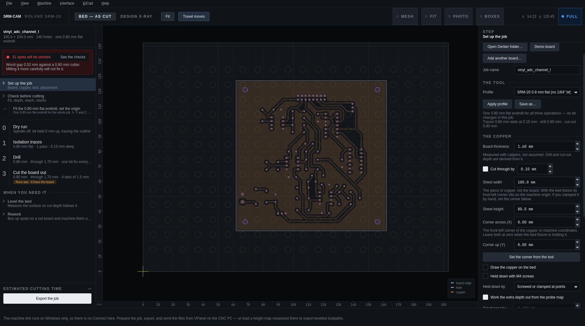
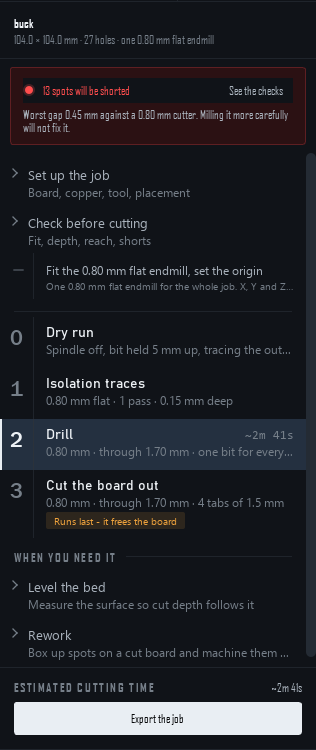
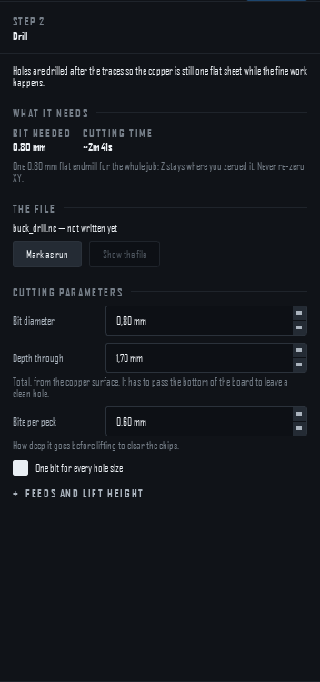
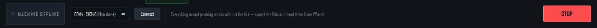
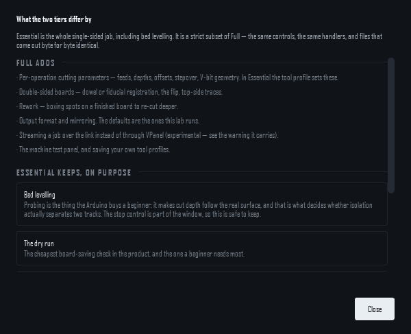

Getting started
Install, learn the window, load a board.
Install
| Platform | Get it | Notes |
|---|---|---|
| Windows | SRM-CAM-Setup.exe | No Python needed. Start-menu entry, Documents\SRM-CAM\ workspace. Install a new version over the old one; setups and profiles survive. |
| Linux | SRM-CAM-x86_64.AppImage from the latest release | chmod +x, run. No install, no root; it carries its own Qt. The machine link is Windows-only — prepare and export on Linux, send the files from VPanel on the CNC PC, and carry a probed height map over as a CSV. |
| From source | pip install -e ".[gui]" then python -m gerber2rml | After a git pull, python -m gerber2rml.doctor installs anything new. |
The first interface is still shipped: SRM-CAM --original from an install, python -m gerber2rml.gui from source. Same engine, same files.
Workspace folders
| Folder | Contents |
|---|---|
Documents\SRM-CAM\sessions | Setups (.srmcam) and height maps (.csv) |
Documents\SRM-CAM\exports | Exported .nc / .rml files and the run plan |
Documents\SRM-CAM\photos | Board photos for the overlay |
Documents\SRM-CAM\gui2.log | Where a start-up problem ends up when there is no console. Read it first if the window never opens. |
The window




- The rail (left) is the run plan — the same order, and the same files, that the export writes. Numbered steps are files you send; the ones between them (fit the bit, set the origin, flip the board) are things you do by hand. Click any step at any time; nothing is locked. A finding that matters stays on the red banner until it is fixed. Export the job is at the bottom.
- The stage (middle) is the bed in machine coordinates: the copper sheet, the board, the toolpaths of the selected step, the spoilboard's screw grid. Drag the board, or tap the arrow keys to nudge it 0.1 mm (Shift 1 mm, Ctrl 0.01 mm). Scroll to zoom, right-drag to pan, Fit to frame the work. Bed — as cut is the only frame the machine understands; Design X-ray exists for checking that the two faces of a double-sided board register.
- The inspector (right) shows the selected step: the setup page, the checks, or a step's parameters, estimate and file.
- The machine bar (bottom) is always there: Connect and the port, the position readout, Z jog, Zero Z here, Spindle, Click to jog, and STOP. Esc stops the machine from anywhere, including with a dialog open.
Essential & Full
Two tiers, on the Interface menu. Essential is the whole single-sided job, including bed levelling; Full adds the rest. Essential is a strict subset — the same controls, the same handlers, files that come out byte for byte identical.
| Essential keeps | Full adds |
|---|---|
| Bed levelling — the stop control is part of the window, so probing is safe to keep | Per-operation cutting parameters: feeds, depths, offsets, stepover, V-bit geometry (in Essential the tool profile sets these) |
| The dry run | Double-sided boards: registration, the flip, top traces |
| The pre-flight checks | Rework |
| Hold-down screws, and the raised travel height that goes with them | Output format and mirroring |
| Placing the job on the bed | Streaming over the link (experimental), the machine test, saving your own tool profiles |

Interface → What the two tiers differ by… lists it in the app. A lab that wants the tier fixed sets SRM_CAM_MODE to essential or full in the environment or the shortcut.
Files from KiCad
- Plot Gerbers File → Fabrication Outputs → Gerbers — at least B.Cu and Edge.Cuts (+ F.Cu for double-sided).
- Drill files Same dialog → Generate Drill Files (Excellon). Everything in one folder.
- Open File → Open Gerber folder… (Ctrl+O) picks up the layers and the drills and names the job after the KiCad project.
Demo board on the setup page loads a bundled 40×30 mm coupon that exercises every operation.
Setups
File → Save the setup… (Ctrl+S) writes one .srmcam file with everything: the boards and where they sit, the tool, the copper sheet, the screws, the height maps of both faces, the measured flip. Load a setup… brings it back. A setup written by the first interface loads too.
A probed height map is minutes of machine time. Save the setup right after probing; the map is in it.